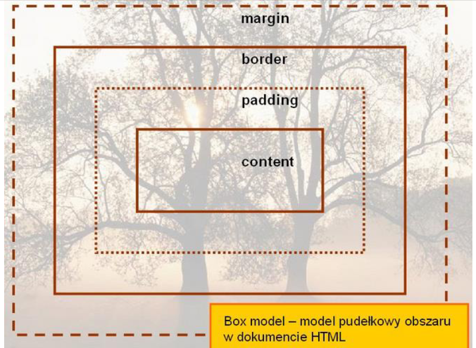
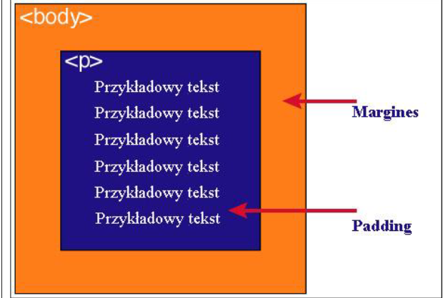

Kod html
<!DOCTYPE html> <html lang="en"> <head> <meta charset="UTF-8"> <meta name="viewport" content="width=device-width, initial-scale=1.0"> <title>zad32_bal</title> </head> <body> <h1>5) Podaj definicję modelu pudełkowego.</h1> <br> <p style="font-family: Arial, Helvetica, sans-serif;">Każdy element w dokumencie HTML, otacza się prostokątnym obszarem zwanym pudełkiem (ang. Box model)</p> <br> <table border="black, collapse" align="center"> <tr> <td>zawartość</td> <td>Opis</td> </tr> <tr> <td>content</td> <td>zawartość elementu (np.: tekst, obrazek)</td> </tr> <tr> <td>padding</td> <td>otaczające marginesy wewnętrzne, odstęp między obramowaniem i zawartością elementu</td> </tr> <tr> <td>border</td> <td>obramowania wokół zawartości elementu, ma styl i kolor.</td> </tr> <tr> <td>margin</td> <td>marginesy wokół ramki (margines zewnętrzny). Jest to pusty obszar wokół ramki, który nie ma koloru tła i jest przeźroczysty.</td> </tr> </table> <br> <h1>Uwaga 1:</h1> <br> <p>Padding, border i margin mogą mieć zerową wartość</p> <br> <h1>Uwaga 2:</h1> <br> <p>Tło elementu jest określone dla wszystkich z podanych powyżej obszarów z wyjątkiem marginesów zewnętrznych, które zawsze są przezroczyste (transparent).</p> <br> <p id="con">   </p> </body> </html> <!--Volodymyr Bal -->
Kod css
<style> #con{ border: 4px dotted black; margin: 40px; padding: 40px; color:aqua; align-items: center; } </style>